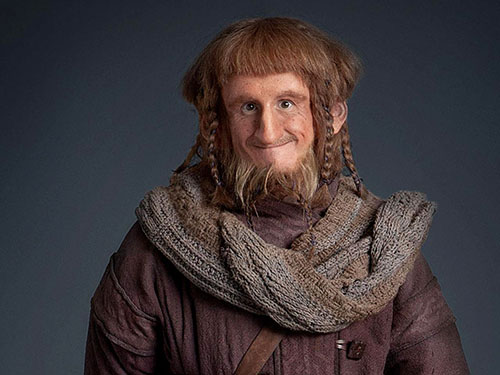

Loru Norsujen Parrasta ja Kaksi Torveloa
_________________________________________________________________________
Taru sormusten herrasta on puoli päivää kestävä komedia, jonka J.R.R.
Tolkien on ohjannut Peter Jacksonin kaunokirjallisten ”teosten” pohjalta.
Alkuperäinen kirjasarja käsittää 10-sivuisen novellin ja pari humalapäissään töherrettyä karttaa.
Alkuperäisteos on hilpeä "Loru Sorbusten herrasta", josta kirjailija on tehnyt vääristellyn
tiiliskiviromaanin hävittäen samalla joitain tärkeitä elementejä tarinasta, esimerkkinä tämä:
"Hän olisi voinut tappaa Kolkkaajan siihen paikkaan, mutta sääli pidätteli hänen kättään.
Todella sääli, että panokseni loppuivat, hän ajatteli samalla, kun jatkoi matkaa tunnelia ylös...")
Alkuun...
”Teoksen” pääsanomana on, että monarkia on ainoa oikea ja paras valtiomuoto,
mitä ihmiskunta on maan päällä ikinä kehittänyt. Jacksonilta tosin kestää ikuisuus,
ennen kuin hän saa sen ”teoksessaan” sanottua. Tolkien on filmatussa versiossa ohittanut
tämän radikaalin sanoman lähes tyystin ja näyttää mieluummin puoli tuntia kestäviä
hidastuksia juoksevista hevosista.
Kriitikot pitävät molempia teoksia yleensä noin kolmen tähden arvoisina.
Tämä johtuu siitä, että kummassakaan produktiossa ei ole originaalia materiaalia,
vaan juonielementit ja hahmot on lainattu muualta. Tärkeimmät inspiraationlähteet ovat
olleet Kalevala ja Babylon 5. Tolkien ei kuolinvuoteellaankaan suostunut myöntämään näiden
yhteyttä hänen tuotokseensa. Moinen omahyväisyys yhdistettynä siihen, että Tolkienillakin
kestää elokuvissaan ikuisuus saada asioita sanottua, sai arvostelijat takajaloilleen.
Ainoa asia, jota ”teoksesta” kiiteltiin, olivat lukuisat hyvin suunnitellut keinotekoiset kielet,
kunnes Tieteen kuvalehti paljasti, että ne ovatkin vain suomea, johon on lisätty heittomerkkejä.
Jotkut luulivat, että Sormusten herran jälkeen Jackson jo ymmärtäisi lopettaa. Papin annettua viimeisen
voitelun Jackson kuitenkin vetäisi tyynyn alta esiin Silmarillionin, jonka hän oli huvikseen vääntänyt
tehdessään kuolemaa.
Arvostelijat moittivat usein kirjaa tylsäksi ja pitkäveteiseksi. Koska Tolkienin filmatisointi seuraa
Jacksonin ”teosta” melko tarkasti, ovat molemmat tylsiä ja pitkäveteisiä. Kirjaa lukevat lähinnä
elämäänsä kyllästyneet nörtit.
Alkuun...

Elokuva on täynnä trolleja niin kuin näkyy.
Jacksonin ”teoksessa” muutama tylsä höpötti joutuu kävelemään pitkän matkan,
jotta he saisivat jonkin halvan korun (ilmeisesti anusneulan) myytyä pois.
Matkahan ei voi sujua hyvin, sillä ”teoksessa” on sentään monta sivua.
Niinpä höpöttiporukka joutuu noin miljoonaan eri häiriötilanteeseen,
ennen kuin matka taas jatkuu. Tarina ampuu itseään jalkaan,
kun höpöttien seuraan liittyy metsissä sammuva dena (joka paljastuukin rikkaaksi kaveriksi),
joka johdattaa höpötit jatkuvasti väärään suuntaan.
Blaablaa blaablaablaa. Ja kohta aletaan laulaa. Zzzzz....
Välillä porukka törmää ihan meneviin taisteluihin,
mutta tämän vastapainoksi vuorotellen jokainen hahmoista alkaa resitoida siansaksalla kirjoitettua lorua,
joka jatkuu noin 118 sivua ja vielä karttojen marginaaleissakin.
Kriitikot ovat arvostelleet Jacksonia siitä, että ”teoksessa” ei ole selkeää roistoa tai pahaa hahmoa.
Kukaan ei lisäksi tunnu tietävän, kuinka monta kirjaa sarjaan kuuluu. Pääosa tutkijoista veikkaa 3–4,
mutta jopa 15:tä on esitetty.
Lopussa päädytään Minas Troneyn kaupunkiin,
jossa Ara-Korni onnistuu huudattamaan itsensä koko paikan kuninkaaksi ja
kaikki päähenkilöt saavat Kuninkaallisen Kädenpuristuksen. Lopulta Sauruksesta tulee kuninkaan
kemiallisten aseiden laboratorion päätutkija, Gimmel saa yksinoikeuden kaikkeen sotaromuun,
ja Legoland perustaa Minas Troneyhin hyvin menestyvän matkamuistomyymälän.
Koko juttu on sekava, rönsyilevä, tolkuton ja tylsä sekoilu ilman juonen häivääkään.
Kuka tahansa tolkullisempi ihminen, ääliö, höpötti tai haltija olisi ihan ensimmäisenä
Riv'n'Dellissä kysynyt Guano-kotkalta, että mistä hinnasta käyt lentäen pudottamassa sen helyn
Tuomiovuoreen?
Teos on eräänlainen kasvukertomus. Ara-Korni oppii, että jos miehestä ei ole kertakaikkiaan urhoksi
eikä sankariksi, niin kieroilemalla ja selkäänpuukotuksella pärjää aivan yhtä hyvin, ja Fritsu oppii,
että laiskanpulskean tyhmän höpötin on parasta pitää vain huolta omista asioistaan eikä sekaantua
silmäätekevien asioihin.
Alkuun...
Paikkoja
Tarina tapahtuu Keski-Maassa, joka jostakin ihmeen syystä pitää kirjoittaa yhdys-viivalla.
Tosi-fiksua vai-mitä? Keski-Maata ei saa sekoittaa Eurooppaan, vaikka näillä kahdella onkin joitain
yhteisiä-piirteitä, kuten monarkioiden-ihannointi. Keski-Maa sijaitsee sananmukaisesti Maan keskipisteessä
ja Eurooppa ei, joten näillä asioilla ei-oikeasti ole mitään-tekemistä.
Keski-Maan nimi on peräisin suomalais-ugrilaisen kantakielen sanasta gefkimuo,
joka kirjaimellisesti käännettynä tarkoittaa: ”Plagioin tämän norjalaisesta mytologiasta.”
Keski-Maassa on paljon mielenkiinnottomia paikkoja, joissa ei tapahtu oikeastaan mitään
satunnaisten rölli-invaasioiden ja noidanpolttajaisten ohella. Niitä ovat mm:
Farbror: Lännen ihmisten kuningaskunta.
Mormor: Pahikset asuvat siellä. Eteläisissä paikoissa asuu mormoneja...
Dorgala: Haltijoiden vanhin asuinpaikka
Riv'n'Dell: Toinen haltijaslummi, jossa Orlon pitää jöötä
Andrea-Doria eli Z'ha'ha-Dum: Ääliöiden vanha luola, jonka Mörssärikarju rölleineen pwnasi joskus kauan sitten
Läävä: Höpötit asuvat siellä.
Minas Troney: Farbrorin pääkaupunki
Paperimassavuoret: Siellä asuu ääliöitä.
Primula: Eräs merkityksetön ihmisten kaupunki, jossa on myös höpöttipopulaatio.
Kestopuumetsä: Siellä on haltijoita riesaksi saakka.
Xylitol: Joki, jota haltijat rakastavat. Siitä juominen aiheuttaa hammasmätää.
Vanerimetsä: Viljo Vihanneksen pusikko.
Noutopiha: Sivamatin lukaali
Pohjanmaa: Raviherrojen lakeudet. Pääkaupungissa pidetään joka vuosi isot juomingit.
Alkuun...
Hahmot
Höpötit
Höpötit ovat pieniä ja haisevat pahalle. Molemmat ominaisuudet johtuvat liiallisesta kessuttelusta.
Dildo Ripuli – Anusneulan alkuperäinen kantaja, joka menettää sen Gandalfille välikohtauksessa,
johon ei liity seksuaalirikosta.
Fritzu Ripuli – Löytää anusneulan Dildon roskiksesta.
Spam Wiseguy – Pitää roskista pystyssä, kun Fritzu kaivaa. Haluaisi kokeilla anusneulaa.
Mersu – Ei osaa uida mutta asuu silti autiolla saarella.
Pepsi – Konnun seremoniamestari ja pommimies.
Klankku – Toisesta ulottuvuudesta tullut digitaalinen matkaopas, raiskaaja, varas, tappaja.
Silti kaikki, erityisesti kertoja, pitävät hänestä. Kärsii ilmeisesti pahasta skitsofreniasta.
Kokeili kerran anusneulaa.Se varastettiin. Varkaat. Petolliset Höpötit. Meidän. My precioussss... hssss!

Magic the Gathering -pelaajat
Mtg-pelaajat osaavat korttitemppuja.
Goodgulf – Looshistaan erotettu ruusuristiläinen silmänkääntäjä. Jotkut väittävät, että Goodgu...
siis Gandalf on ”teoksen” kertoja, mutta Gandalfin masokismin taso ei tutkimusten mukaan yllä
teoksen varsinaisen kertojan tasolle. He eivät siis ole sama henkilö. Gandalf puhuu liikaa ja
estää usein juonen etenemisen. Haluaisi kokeilla anusneulaa.
Siwamat – Gandalfin kaksoisveli, joka rakentaa hiekkalaatikolla röllejä.
Haluaisi epätoivoisesti kokeilla anusneulaa. Pesee mustankin valkoiseksi ja valkoisen moniväriseksi.
Saurus – Anusneulan alkuperäinen omistaja, jolla ei ole mitään halua saada sitä takaisin.
Hänellä on tutkinto kauppatieteistä ja demonologiasta.
Puuparka eli Viljo Vihannes – Vanha pedofiili, joka houkuttelee höpötit metsään ja ”pitää heistä huolta”
... Hän on puu-ukkojen ykköspamppu.
Tim Benzedrine – Puuparan pedofiilikaveri, joka hämää lukijaa 70 sivua, jotta Puuparka saa taustalla
”hoidettua asiat” höpöttien kanssa. Asuu metsässä vaimonsa Hamppu-Marin kanssa.
Ihmiset
Ihmiset rähisevät keskenään ja kaikkien vastaan tulevien kanssa – ihan niin kuin fiktion ulkopuolellakin.
Ara-Korni – Kiukutteleva pikkupoika, joka karkasi pienenä kotoa.
Isä Theo – "Hoitaa" hevosten lisäksi veljentyttärensä Eufrosynen...
Eufrosyne - Hevostyttö, joka tykkää koppalakeista, monokkeleista, ratsupiiskoista ja ratsastussaappaista. Keski-Maan ensimmäinen radikaalifeministi.
Barafin – Statisti, joka halusi anusneulaa hieman liikaa. Onneksi hänen isänsä ei saa tietää sitä.
Tramp-Olin – Tulee Barafinin tilalle haluamaan anusneulaa. Isä saa valitettavasti tietää.
Isä Benelux IX Hidasjärkinen – Omistaa Minas Troney -nimisen kaupungin Farbrorin maassa, jossa seuraa Seiskasta uutisia poikiensa toilailuista.
Isän pitäisi lisäksi valvoa, etteivät naapurin Mormor-maan kansalaiset tee mitään typerää.
"Teos" loppuisi 400 sivua liian aikaisin, jos hän niin tekisi. On kuikuillut Kuplaa liian usein.
Raviherrat
ovat hevoskansaa. Pitävät ravikisoja joka viikko. He kuuluvat ihmisiin.
Raviherroja ovat Isä Theo ja Eufrosyne. Heillä on tapana pukeutua kansallispukuun
ja käyttää koppalakkeja, ratsupiiskoja, monokkeleita ja ratsastussaappaita.
Ääliöt
Ääliöt ovat ihmistä pienempiä, ahneempia, kaivelevat enemmän tunneleita ja juovat enemmän alkoholia.
Gimmel – Stand-up-koomikko, jolta eivät puujalkavitsit lopu kesken. Legolandin kaveri ja ylettyykin
"tarpeeksi korkealle"... Onnistuu lopuksi rikastumaan saamalla yksinoikeuden kaikkeen Saurukselta
jälkeenjääneeseen sotamateriaaliromuun.
Kaikki muut ääliöt ovat ilmeisesti valmiiksi kuolleita ”teoksen” alkaessa.
Syynä oli Z'ha'ha-Dum-planeetan väärä asento Auringon kanssa, mikä aiheutti liikaa varjoja.
Haltijat
Haltijat ovat ärsyttäviä, koska he ovat olleet maailmassa kauan ja tietävät kaikesta kaiken –
ja myös muistavat mainita siitä joka käänteessä. Haltioiden pajoissa taotaan anusneulat.
Niitä on kaikkiaan 20: kuusi maiden hallitsemiseksi, viisi alistamaan meret valtaansa,
kolme ilmojen voittamiseen ja kaksi pahanhajuisen hengityksen poistamiseksi. Plus sitten tietty Sauruksen anusneula.
”Haltiat tekivät Sormuksen tään
ja sen saadakseen katkaisee kenen tahansa pään.
Olkoon haltija sen vaikka narkki tai peikko,
ei tarvitse tyypin enää koskaan olla heikko.
Tää Sormus on kaikkien taikojen summa.
Jos sillä ei pärjää, niin johan on kumma.
Jos joku sen löytää, niin muistakoon
lähettää sen Sauruksen postilokeroon”
Legoland – Salamurhaaja metsiköistä. Tappaa röllejä. Paljon. Saa lopuksi kuninkaallisen yksinoikeuden
pitää Minas Troneyssä matkamuistomyymälää.
Orlon – Agentti, joka huijaa päähenkilöitä joka käänteessä. Kriitikoiden suosikkihahmo,
huolimatta tavastaan aloittaa jostain syystä keskustelu sanaparilla Mr. Anderson.
Haluaisi kokeilla anusneulaa.
Lady Lycra – Järjestää thai-hierontaa höpöteille metsässä. Saa melkein kokeilla anusneulaa.
Myy päähenkilöille piristäviä huumeita, haltijoiden taikaleipää.
Cellofan - Lady Lycran puoliso. Täysin vaimonsa tossun alla oleva B-luokan nynny.
Garfunkel - Orlonin kaveri ja hilpeä hevosveikko.
Alkuun...
Röllit
Röllit eli narkit ovat rumia, typeriä, omahyväisiä ja järjestäytyneitä olioita,
jotka seuraavat sokeasti johtajaansa. Ne eivät silti ole lestadiolaisia, vaikka siltä ehkä vaikuttaakin.
Nasalsprayt
Nasalsprayt ovat Sauruksen ja Kääkän yhdeksän terhakkaa poikaa,
jotka Kääkkä pullautti sinä aikana kun Saurus oli viimeistelemässä graduaan.
He ovat hyvin ilkeitä ja heillä on pahanhajuinen hengitys. Tykkäävät pukeutua mustiin huppareihin.
Eufrosyne päästää yhdestä heistä ilmat pihalle - kirjaimellisesti.
Kääkkä
Kääkkä on ikävä vanha akka, joka vanhuuttaan on muuttunut hämähäkiksi ja punoo juoniaan
ja verkkojaan kaikkien ohikulkijoiden pään menoksi luolassaan. Ei piittaa anusneulasta,
koska on niin vittumainen otus.
Synonyymisanahirviö
Ilkeä olento. Et halua tavata pimeällä kujalla.
Mörssärikarju
Mörssärikarju on Andrea-Doriassa (ääliöiden kielellä Z'ha'ha-Dum) asuva vielä ilkeämpi otus,
joka tykkää piiskaleikeistä ja asefetisismistä. Ei puhu paljoa, mutta hänen piiskansa puhuu senkin edestä.
Hänellä on henkilökohtainen ongelma sekä ääliöiden että Goodgulfin kanssa. Kirjailija jättää avoimeksi,
että soivatko lopulta hääkellot Kääkän ja Mörssärikarjun häihin muutaman vuosituhannen kuluttua.
Alkuun...